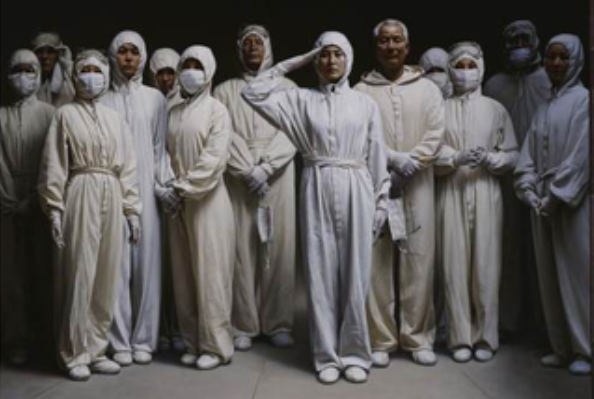

抗击非典

2003年，在抗击非典的关键时刻，中共中央总书记、国家主席胡锦涛向全党和全国人民发出号召：“我们要大力弘扬万众一心、众志成城，团结互助、和衷共济，迎难而上、敢于胜利的精神。”胡锦涛同志提出的抗击非典的二十四字精神，是对人民群众抗击非典伟大精神的精辟概括，是对民族精神的新的丰富，是鼓舞全党和全国人民夺取抗击非典斗争胜利的强大动力。
2003年，在抗击非典的关键时刻，中共中央总书记、国家主席胡锦涛向全党和全国人民发出号召：“我们要大力弘扬万众一心、众志成城，团结互助、和衷共济，迎难而上、敢于胜利的精神。”胡锦涛同志提出的抗击非典的二十四字精神，是对人民群众抗击非典伟大精神的精辟概括，是对民族精神的新的丰富，是鼓舞全党和全国人民夺取抗击非典斗争胜利的强大动力。